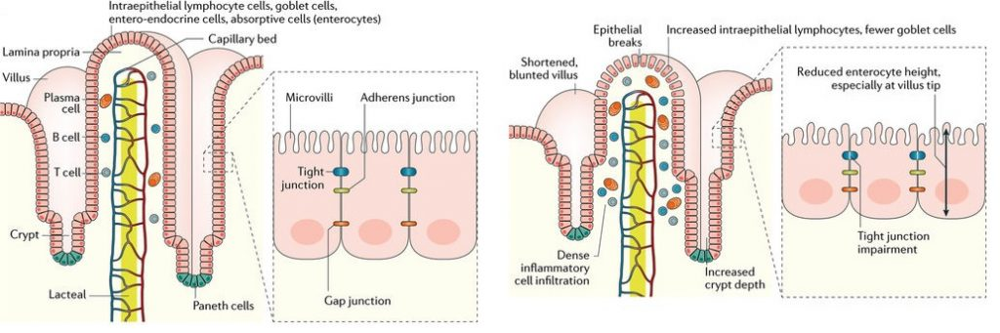

After a long period of writing and revision, our output from a Bill and Melinda Gates Foundation project on 'Optical Biopsy of the Gut' is now out. The paper, called The potential role of optical biopsy in the study and diagnosis of environmental enteric dysfunction, is available open access in the journal Nature Reviews Gastroenterology & Hepatology.

Many people will never have heard of environmental enteric dysfunction, or EED, and yet it affects millions of children across the developing world, with hugely damaging effects on their growth and development. Essentially, normal gut function becomes impaired as a result of repeated cycles of infection, resulting in reduced intake of nutrients and a weakened barrier between the gut and the bloodstream. The idea behind this project was to investigate whether the armoury of in vivo imaging and sensing techniques which have become available in recent years could help us to better understand, diagnose and treat this condition.
This project was led by Prof Guang-Zhong Yang at Imperial College, and included an advisory board with experts from universities, industry and healthcare. I was involved from the beginning, helping to write the initial application for funding with Prof Yang, and then working as one of the main postdocs on the project for over a year while at Imperial. This included getting to grips with a topic I initially knew very little about, recruiting and coordinating the advisory board, and organising events in London and San Francisco.
The project was a huge amount of work. With the help of the expert advisors, we wrote a full report over 100 pages in length (which will be made public in due course), as well as organising a workshop on Imaging for Global Health in London. I gave an invited talk at a special session of the Endoscopic Microscopy Conference at Photonics West 2016, and I am still working on some other outputs from the project now that I&'m here in Kent.
Hopefully, this paper will provide the inspiration for people working in the field of optical biopsy to begin targeting this application, and potentially help transform lives across the world.